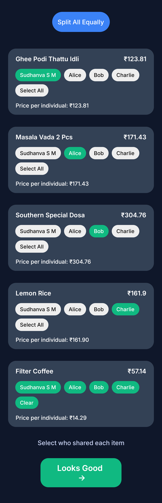
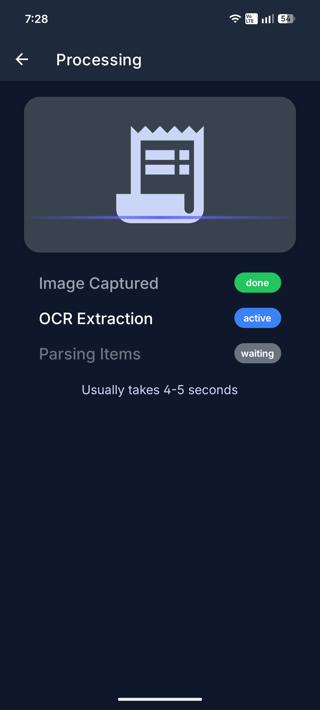
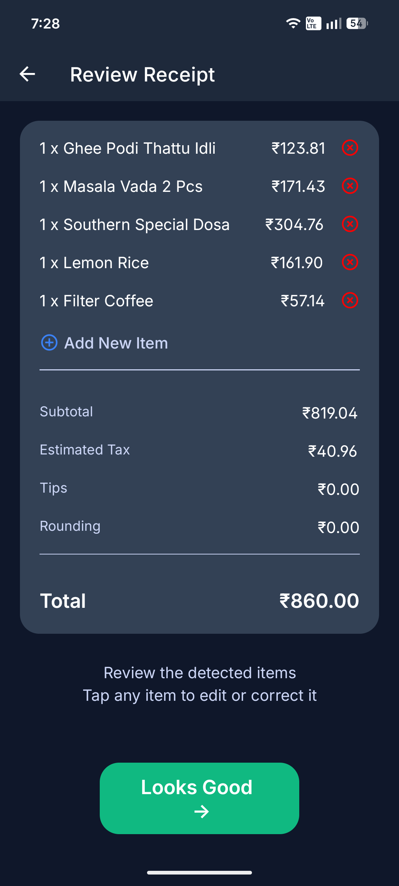
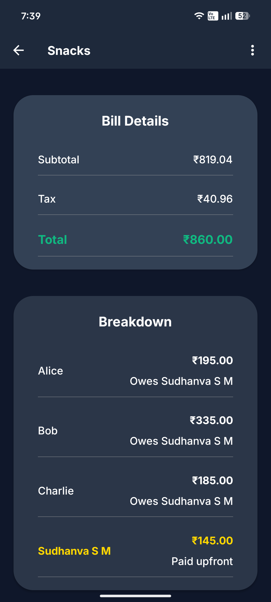
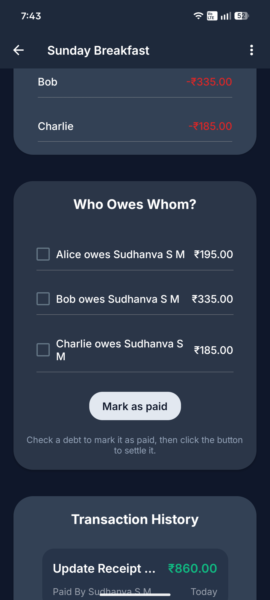

01
Capture the bill
Take a photo or choose one from your gallery. FAIR sends it through OCR and turns the result into editable items.
See receipt scanning ↘Fair And Intelligent Reconciliation
FAIR turns a restaurant receipt into a split your whole group can understand: what was ordered, who shared it, who paid, and what is still owed.

A better way to split
Different orders, shared plates, tax, and rounding all belong in the same picture. FAIR keeps the details attached to the final amount.
Take a photo or choose one from your gallery. FAIR sends it through OCR and turns the result into editable items.
See receipt scanning ↘Review names, quantities, prices, subtotal, tax, tips, and the total. Correct anything before saving.
See receipt review ↘Tap the people who shared each dish. Split one item across several people or assign it to just one.
See item assignment ↘FAIR calculates each person's share, shows who owes whom, and keeps a record of settlements.
How settling works ↘Scanning is optional. If OCR cannot read a bill, enter items manually and continue with the same assignment and split flow.
A look inside FAIR
These are real app screens. Each one keeps the next decision easy to see and easy to check.



Close the loop
FAIR compares what each person owes with what they paid. The result is a short list of debts between people, so the group can settle up without doing the math again.
Review the balances
See who is owed and who needs to pay.
Select a debt
Choose the payment the group has made.
Mark it as paid
FAIR records a settlement and updates balances.
FAIR records payments; it does not move money or verify a transfer.

Two databases. One FAIR account.
FAIR keeps a SQLite database on the phone for core group and expense records, and uses Supabase as its cloud database. That gives the app local data to work from and a cloud copy associated with your signed-in account.
ON YOUR DEVICE
Local database file: fair.db
YOUR FAIR ACCOUNT
Cloud database + authentication
After account sign-in, FAIR fetches your profile and synced groups, receipts, items, debts, and settlements into the local SQLite database.
New or updated local records carry a sync status. FAIR uploads groups, members, receipts, assignments, debts, and settlements and marks successful records as synced.
You can also start a sync from the Profile menu. Sync needs a connection; locally stored data remains on the device.
Receipt images are sent to the backend for OCR processing. They are not stored as receipt image files in the app’s receipt records.
Made for shared meals
Made to preserve the context behind a number, from the first photo through the last settlement.
See how FAIR is built ↗Review subtotal, tax, service charge, tips, rounding, and total in the receipt flow.
Assign an item to one person or several, and FAIR calculates the per-person share.
See members, group balances, recent transactions, and settlement records together.
OCR helps get started. Review and edit the extracted items before a split is saved.
Make the next bill easier
Keep the receipt, the shares, and the settlement in one place.